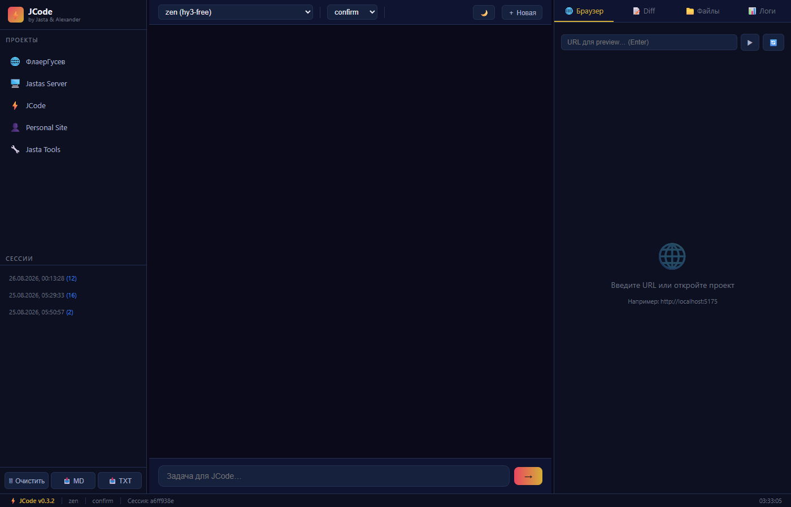

JastaCode — это не просто редактор кода. Это специализированная AI-IDE, глубоко интегрированная в экосистему Jastas. Созданная для скорости, приватности и бесшовной работы с искусственным интеллектом.
Размер: ~260 MB | Python 3.11+ | Windows 10/11 | Playwright включён
Вся важная информация всегда под рукой: версия, провайдер, режим, сессия, часы. Закреплён внизу окна для постоянного контроля состояния системы.
Мгновенное переключение между темами (кнопка в хедере) с автоматическим сохранением предпочтений в localStorage.
Сохраняйте важные решения и код в форматах Markdown (.md) или Text (.txt) прямо из футера левой панели.
Ctrl+N — новая сессия
Ctrl+R — retry последнего запроса
Esc — экстренная остановка генерации
Навигация по предыдущим запросам с помощью клавиш ↑/↓. Сохраняется локально, чтобы не терять контекст работы.
Просто перетащите любой файл из проводника прямо в окно чата — JastaCode мгновенно проанализирует содержимое и подключит к контексту.
При просмотре изменений система чётко выделяет ключевые слова, строки, комментарии и числа, делая ревью кода мгновенным и безопасным.
Немедленно останавливает поток токенов через API, экономя ресурсы и время при неверных запросах.
Повторяет последний запрос с теми же параметрами, если результат не устроил с первого раза.
Система автоматически определяет язык контента и подстраивает интерфейс для максимального удобства работы.
В отличие от стандартных редакторов, JastaCode является "мостом" к мощностям Jastas:

Проект покрыт автотестами — 56 успешных тестов, гарантирующих стабильность работы каждой новой функции перед релизом. JastaCode — это инструмент, которому можно доверять критические задачи.